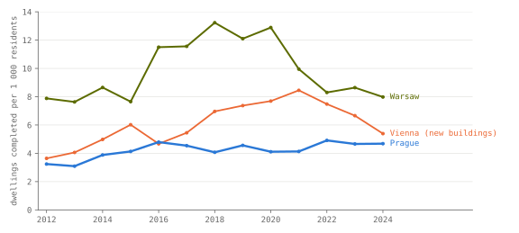
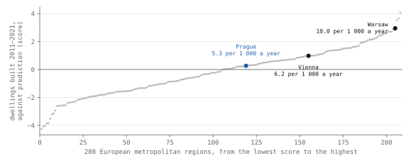
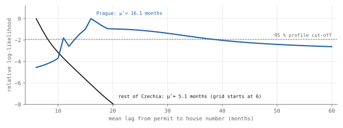
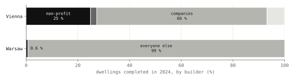
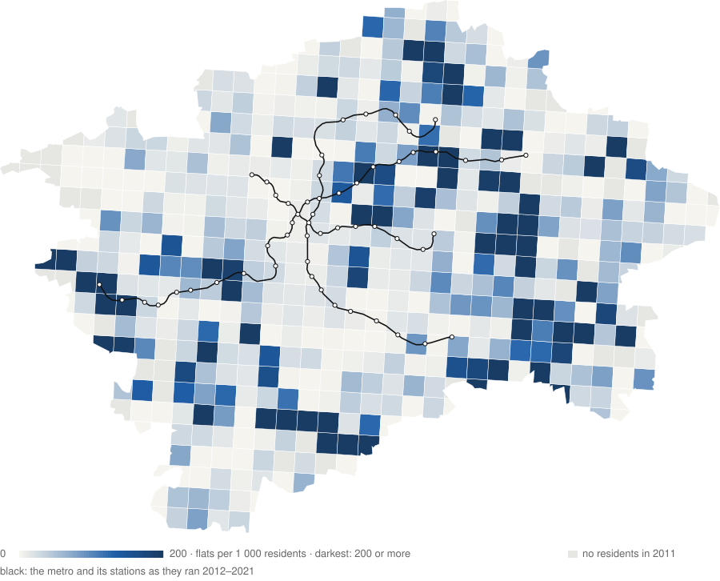
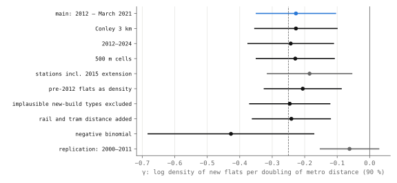

Research · Prague, measured, Part 4 of 5 · housing supply, 2007–2024
Do completions follow permits later in Prague than in the rest of Czechia?
In official monthly counts, completions of flats in new Prague apartment buildings follow permits later than elsewhere in Czechia (supported); the best fit is 11 months longer, but anywhere from about 6 to over 30.
- Prague, homes per 1 000 residents
- 4.5 a year, 2015–2024 mean · administrative count, no sampling error
- Prague metro region, per 1 000
- 5.28 a year, 2011–2021 census, which in Czechia includes reconstructions · 163rd of 208, median 3.55 · new houses only: 3.88, 116th, median 3.50
- permit to completion, Prague − rest
- +11.1 months supported · best fit; size about 6 to 30+ months (profile likelihood); the bootstrap 8.7 to 12.6 understates it
- new flats, per doubling of metro distance
- −0.23 log density, about 20 % fewer new flats per km² · decision p 0.0252 against 0.025 (district bootstrap, about 14 clusters) · indeterminate
Overwhelmed? Here's the short version
- Prague completes fewer homes per resident than Vienna or Warsaw; its region is in the upper quarter of European metropolitan regions on a census count that includes Czech reconstructions, and mid-table on new houses alone.
- After a permit, completions of flats in Prague's new apartment buildings are recorded later than elsewhere in Czechia (supported). The direction holds in every variant, but the size depends on the assumed lag shape, 41 months with an exponential lag, and the rest of Czechia's best-fitting lag lies at the edge of the grid searched.
- The gap starts at the permit, so it says nothing about how long getting a permit takes, and part of it may be when completions are registered or how large Prague's projects are.
- The metro test is indeterminate; the Polish builders' test and the demand and price estimates are uninformative.
Photo: VitVit · CC BY-SA 4.0, toned

The question and what this adds
Housing economics distinguishes several reasons why a city adds few homes. Demand may be low; procedure may be slow, either in granting permits or in building once a permit is granted; or supply may not respond when prices rise, which happens where regulation binds and prices rather than quantities absorb demand2,3,4. The responsiveness of supply to prices has been estimated from national series5,6, and the Czech discussion of procedure has concentrated on how long a building permit takes, the step the 2021 building act addressed and the one the World Bank's discontinued Doing Business series measured for a stylised warehouse7,8. This study measures the step after the permit with official monthly data, asking how long a permitted flat takes to be completed in Prague compared with the rest of Czechia, and places that measurement beside a census comparison of Prague with Europe's metropolitan regions, a test of where in Prague new flats are built, and a Polish test of whether non-market builders respond differently to prices.
Data
The starting point is a count that each country's statistical office publishes: new homes completed in a year for every thousand residents. Prague has 1.4 million residents, Vienna 2.0 million and Warsaw 1.9 million, and the three series come from the Czech Statistical Office, Statistik Austria and Statistics Poland9,10,11,12.
Prague completes fewer homes per resident than Vienna or Warsaw, two high builders.

Prague's line is the flattest of the three and the lowest in every year but 2016. It runs between 3.1 homes per thousand residents in 2013 and 4.9 in 2022, and in 2024 the city completed 6 489 homes. Vienna climbed through the 2010s to 8.5 in 2021, when 16 262 homes were completed in new buildings, and fell to 5.4 in 2024, while Warsaw built more than both in every year, with a peak of 13.2 in 2018, or 23 430 homes. Over the ten years to 2024 Prague averaged 4.5, Vienna 6.6 and Warsaw 10.4. As the European comparison below shows, the metropolitan regions of both comparators build well above the European median, so these three lines set Prague beside two high builders.
| Year | Prague | Vienna, new buildings | Warsaw |
|---|
Per 1 000 residents, homes completed in brackets. Administrative counts, no sampling error. Data: cities.json.
Each office uses its own definition. Because Vienna's figure leaves out homes made by converting or extending buildings until 2024, Vienna is if anything understated here. Prague's figures are the Czech Statistical Office's own per-thousand rates; its first release for 2024 gave 6 511 completed homes, revised to 6 489 in the current series13. Warsaw's rates use Statistics Poland's end-of-year population averaged over consecutive years, revised upward from 2020 after the 2021 census, and they match the office's published rate where one exists (11.50 and 11.56 for 2016 and 2017).
The tests use four further sources. The 2021 census round gives dwellings by the period in which their building was built for Europe's metropolitan regions, and the 2011 round, regional accounts and the metropolitan typology give the covariates14,15,16,17,18,19,20. The Czech Statistical Office publishes permitted and completed dwellings by region every month and a quarterly price index of flats21,22. For Prague itself, the cadastre's building points give each building's flats and completion date23, which are placed on the 1 km population grids of 2011 and 202124,25. The Polish district panel comes from the Local Data Bank. All raw files are listed with their SHA-256 hashes.
How this was done
The study follows a registered analysis plan: design committed at 503ef06 on 29 September 2026, before the results commit 4e4301c; commit times are self-reported, and the branch was pushed after the analysis1. The design's dated entries of 29 September, including the one headed "before any outcome was joined", were committed together with the results, so their timing rests on the author's record alone. The author has worked with these sources continuously since May 2024, in work that led to this study, so the design was written with knowledge of the sources, not blind to them; she had already published the three-city comparison and the 2024 builder split (on 28 September 2026). The plan sets the analysis in advance; the author already knew the data.
This text calls the Czech Statistical Office's "zahájené byty", literally dwellings started, permitted dwellings, because they are counted from building permits; the pipeline runs from the permit to the house number that marks completion. Three hypotheses, H2, H4 and H5, form the confirmatory family and share a 5 % family-wise error rate, at most a 5 % chance of any false positive among the three, through Holm's procedure26, which tests the smallest p-value against 0.05/3, the next against 0.05/2 and the last against 0.05, and stops at the first that misses. Two others were demoted to estimates, each with a sentence fixed in advance for what would be said: the European comparison (H1), because Prague's census numerator was effectively known from the three-city count, and the price response (H3), because with one Prague and 27 quarters no valid test exists at those thresholds. Each question also has a relevance check, which tests whether the model sees the expected relationship where it should; if the check fails, the result is labelled uninformative whatever its p-value.
Power was simulated with sealed scripts that read only series from before the confirmatory windows27. The simulations expected the pipeline test to be decisive at a six-month difference unless monthly noise was as large as the signal, the metro test to be decisive at a 22 % density difference, and the builders' test to be weak. The inference units are the monthly series of two regional aggregates for H2, 242 Polish districts for H4 and 524 one-kilometre squares in Prague's 22 administrative districts for H5.
Registered tests and estimates
| Hypothesis | Test | Result |
|---|---|---|
| H2 · a permitted Prague home takes longer to get a house number than one in the rest of Czechia | Prague's mean lag minus the rest's, μP − μR > 0 | supported +11.1 months, p < 0.001 |
| H4 · in Poland, municipal and social builders respond less to local price growth than developers | non-market builders' price response minus developers', βNM − βM < 0 | uninformative −0.56, p = 0.17; relevance check failed |
| H5 · in Prague, new flats are denser near the metro | change in log density per doubling of distance, γ < 0 | indeterminate −0.23, p = 0.0252 against 0.025 |
| H1 · Prague builds less than European peers with its demand estimate, rule fixed in advance | rank of Prague's gap from the model's prediction (conformal rank) | uninformative rank 119 of 208, p = 0.57 |
| H3 · Prague's permitting responds less to price growth estimate, rule fixed in advance | 90 % interval robust to serial correlation (EWC) | uninformative −11 (−86 to +63) |
p-values are one-sided. H2 uses a stationary block bootstrap28, which resamples runs of consecutive months, with 9 999 draws; H4 a wild score bootstrap29 over 242 Polish districts, which re-weights whole districts at random to judge the estimate when observations within a district are correlated; H5 the larger of a spatial p-value (Conley30, 1.5 km) and a wild score bootstrap over Prague's 22 administrative districts; H3 equal-weighted cosine (EWC) intervals31. Holm thresholds are 0.0167, 0.025 and 0.05. H2 passes the first and H5 misses the second, so testing stops there. H3 is the cumulative response of permitted dwellings, in log points (a log point is about 1 %), to a 1 % price rise of flats in each of the twelve preceding quarters, 2018–2024, with a price index from cadastre purchase contracts that mixes new and existing flats22; Prague's response relative to the rest of Czechia is −11 (90 % EWC interval −86 to +63), and it is labelled uninformative because the rest's own response, 16 (−22 to +54), cannot be told from zero. Prague ranks 5th from the lowest of 13 regions; four lags over 35 quarters give +3.8 (−2.4 to +10.1), and the family-house index, a placebo, +8.5 (−25 to +42). Data: housing_extended.json.
Prague among 208 European metropolitan regions
The 2021 census round recorded when each dwelling's building was built. Dwellings in buildings from 2011 or later, per resident and per year, therefore measure the last decade's new supply on nearly the same definition across 22 countries, although Czechia and Spain also count reconstructions. The unit is the metropolitan region, because housing markets do not stop at city limits, and Prague's region is Prague plus Středočeský kraj. Of Eurostat's 297 metropolitan regions, 208 have the census answer and the covariates.
Per resident, Prague's metropolitan region built 5.28 dwellings a year by the census count, which places it 163rd of 208 from the bottom, in the upper quarter on a count that includes Czech reconstructions; the median region built 3.55. Counting only the Czech Statistical Office's completions of new houses gives 3.88, mid-table at 116th of 208 on raw rates against a median of 3.50. Vienna's region built 6.2 a year and Warsaw's 10.0. The registered within-Czechia replication was run on the raw Czech Statistical Office rate instead of the model, because 14 regions cannot carry it, a deviation listed in the change log: by it Prague built the second most of the 14 Czech regions per resident, 3.7 a year against a median of 2.1 elsewhere. By the census count Prague's region is in the upper quarter, and on new houses alone it is mid-table, just above the median; on both it builds less than Vienna's and Warsaw's.
The registered estimate compares each region with a prediction from what was known in 2011: population growth to 2011, size, output per head, dwellings per head, and whether the region holds a capital. The prediction for each country's regions comes from a model fitted on all other countries, and the gap is scaled by how well such regions are usually predicted32,33.
Against a demand model Prague's region ranks 119th of 208, shown as description only, since the model failed its check.

Against that model Prague's region ranks 119th from the bottom, Vienna's 155th and Warsaw's 205th. The city on its own ranks 107th, and with the count rebuilt from the Czech Statistical Office's completions of new houses, Prague ranks 93rd as a metro region and 76th as a city. Czechia's mean score is 0.18, 8th of 22 countries from the bottom, and Prague's score lies 0.12 above the mean of the other Czech metropolitan regions, the two parts of the registered decomposition. The rule written in advance would call this "within the range of European peers", but the model failed its relevance check: regions that grew faster before 2011 did not build more afterwards, and the coefficient is negative. By the same rule the ranks are labelled uninformative.
From permit to completion in Prague and the rest of Czechia
Every month the Czech Statistical Office counts dwellings permitted and dwellings completed in each region. If Prague's flats take longer to finish, completions follow permits with a longer delay. The model estimates that delay as a distribution of lags between the two series, for flats in new apartment buildings, Prague against the other twelve regions, and the estimand is the difference between the two mean lags. Středočeský kraj is left out of the comparison, because it absorbs Prague's overflow.
In the monthly counts, completions follow permits about 11 months later in Prague (best fit; 6 to 30+ possible).

The best-fitting mean lag is 16.1 months in Prague and 5.1 elsewhere, a difference of 11.1 months, and H2 is supported (p < 0.001). The p-value uses the bootstrap standard error of 1.93 months with a normal approximation, so the interval that matches the decision is the one-sided lower bound at Holm's threshold of 0.0167, which is 6.9 months; that is, at that threshold the data rule out a difference smaller than 6.9 months. The 5th to 95th percentiles of the bootstrap draws, 8.7 to 12.6 months, are narrower than that standard error implies, because a few draws lie far from the rest.
Fig. 3 shows why both bootstrap figures understate how uncertain Prague's own lag is. The 95 % profile-likelihood region for Prague's mean lag runs from about 14 to 38 months, with one isolated grid point at 11 months also inside it, while the region for the rest of Czechia ends at about 8 months. The rest's curve peaks at the left edge of the grid, 6 months, with its estimate of 5.1 months outside the grid, so its lag is pinned at the edge and could be shorter still, and the difference inherits that. Prague's fitted lag distribution is degenerate: the model puts every flat at the single lag of 16 months, with no spread, and every bootstrap draw is refitted starting from that estimate, so the draws probably stay close to it. Read from the profile likelihood, the two regions do not overlap, so the sign of the difference holds, but its size lies somewhere between about 6 months (3 if the isolated point at 11 months is counted) and more than 30 months. The model also estimates the completion yield, the share of permitted flats that turns into completions: about a quarter in Prague (0.26) against 0.72 elsewhere, so Prague's lag rests on a weak link between the two series. In the bootstrap the yield and the lag are almost uncorrelated (−0.05), and no weight falls beyond the six-year window. Prague's monthly noise also turned out to be 3.3 times the fitted signal, beyond the design's power simulations, which stopped at a ratio of 1, where power at a six-month difference was only 25 %; a test that passes with so little power tends to overstate the size of the effect.
What the difference measures also needs qualifying. Five months is too short to build a block of flats, so outside Prague the fit probably also tracks when completions are reported relative to permits, and Prague's projects may be larger, in which case part of the lag reflects project size rather than procedure. The 11 months are therefore a difference in the recorded pipeline, from permit to house number, which may partly be reporting timing, and not a clean difference in construction time. The result also says nothing about how long the permit itself took, which is the part of the process Czech reform has targeted7.
Who builds: Vienna, Warsaw and 380 Polish districts
A quarter of Vienna's new homes came from limited-profit builders; in Warsaw the public sector built 0.6 %.

In 2024 a quarter of Vienna's new homes, 3 107 of 12 478, were built by limited-profit housing associations, companies whose profits Austrian law restricts, and another 2.4 % by the public sector itself. In Warsaw the city built 96 homes that year and its public building societies none, 0.6 % of the year's 14 873. The Czech Statistical Office does not publish Prague's completions by builder, so for Prague the comparison stops at volume.
No yearly Austrian series by builder was found, but Poland records, for each of its 380 districts, the dwellings that municipalities, social building societies and developers begin each year, so the registered question concerns Poland only: whether non-market builders respond less to local price growth than developers. The point estimate goes the expected way, −0.56 (90 % interval −1.52 to +0.39, p = 0.17), with the 242 districts on common support (those where both kinds of builder could be compared) acting like about 63 independent clusters, and the design had put power at the smallest difference of interest at 19 %. A separate descriptive estimate of cyclicality, national and without year effects, gives a difference of −2.2 (standard error 4.2), equally uninformative. The relevance check fails, because developers' own starts do not visibly respond to local price growth either (0.09, p = 0.32), which leaves no response for the non-market builders to be smaller than, and the result is labelled uninformative. In US studies, subsidised construction partly replaces what the market would have built34,35, and the Polish test says nothing about what limited-profit associations would do in Prague.
New flats and distance to the metro in Prague
Urban economics predicts that land near a metro station is worth more and that an unconstrained market would build more densely there; the prediction motivates the test and is not itself a finding here. Near-metro squares are also largely built-out estates with little land left to build on. The test counts flats completed between 2012 and census day in March 2021 in each of Prague's 524 one-kilometre squares, holding equal the distance from the centre and how many people already lived in the square in 2011.

Fewer new flats further from the metro, about 20 % per doubling, but the registered test is indeterminate.

The estimate is γ = −0.227 (90 % Conley interval −0.349 to −0.105), which means that each doubling of the distance to a station goes with about 20 % fewer new flats per square kilometre. This is an association: squares near stations also differ in the land left to build on, in what the city plan allows, in the age of what already stands there and in how the lines run out from the centre, and none of these was measured. The registered decision takes the larger of two p-values, 0.0011 from the spatial (Conley) standard error and 0.0252 from the wild bootstrap over Prague's 22 administrative districts, which act like fewer than 14 independent clusters. Holm's second threshold is 0.025, so H5 does not pass, and because the reverse test does not come close either, the registered label is indeterminate. The margin, 0.0002, is within the bootstrap's own simulation error of about 0.0016, and the test was not re-run. The land and planning layers that could separate these could not be obtained in time.
Robustness
| Result | Variant | Estimate |
|---|---|---|
| H2 | Jihomoravský kraj, home of Brno, as the only comparison | +7.6 months |
| H2 | Středočeský kraj counted as Prague | +10.3 months |
| H2 | family houses added | +5.0 months, p = 0.055 |
| H2 | exponential lag instead of the registered gamma lag | +40.6 months, bootstrap diverged, no p |
| H2 | without the COVID months | +11.2 months, bootstrap diverged, no p |
| H5 | half-kilometre squares, 2012–2024, implausible types excluded, rail and tram added, 57 city districts | negative in every variant (fig. 5 and its caption) |
| H5 | dropping any one district | −0.27 to −0.18 |
| H5 | 2000–2011, before the window | −0.06, uncertain |
| H1 | seven variants of the demand model (numerator, sample, covariates, weights) | 45th of 116 to 138th of 208 |
| H3 | Warsaw, notified starts of works, not tested | −5.7, 4th of 376 districts |
| Specification curve | specifications | same sign | p < 0.05 | robust by the registered rule |
|---|
A specification curve reruns the same test under each registered variant. Registered rule: robust if at least 75 % of specifications share the sign and at least 50 % reach unadjusted p < 0.05; the two diverged pipeline variants count as failures. H5 is robust by this rule and still missed its Holm threshold of 0.025, so its label stays indeterminate. Robustness bootstraps use 999 draws. Data: housing_extended_robust.json.
The sign of the pipeline difference holds in every variant that was run, but its size depends on the assumed lag shape: 11 months with the registered gamma lag, 41 with an exponential one. The metro gradient stays negative in all of them, although in 2000–2011 it was about a quarter as steep. Against the demand model, which failed its relevance check, Prague stays out of both tails in every variant.
What this means
In official monthly counts of flats in new apartment buildings, completions follow permits with a best-fitting mean lag 11.1 months longer in Prague than in the rest of Czechia: supported (p < 0.001), with a one-sided lower bound of 6.9 months at Holm's threshold. The sign holds, but the profile likelihood allows a size from about 6 months to more than 30 months. The gap may partly reflect reporting timing and project size; the design identifies no cause, so it does not show that procedure after the permit delays Prague's flats, or what shortening it would change. It excludes the time taken to obtain a permit, the step the 2021 building act addressed.
Prague completed 4.5 homes per 1 000 residents a year over 2015–2024; by the 2011–2021 census count, which in Czechia includes reconstructions, its metropolitan region built 5.28 against a European median of 3.55, and on new houses alone 3.88, 116th of 208. Whether that is low for its demand is uninformative: the demand model failed its relevance check. The metro gradient, −0.23 in log density per doubling of distance (90 % Conley interval −0.349 to −0.105), is indeterminate and describes an association only.
What this does not show
The European comparison is descriptive and establishes no cause, and its demand model failed its relevance check. The pipeline result starts at the permit, so it does not measure the time it takes to get one, and the difference it measures may partly be reporting timing and project size. Because prices respond to supply as well, the price questions measure responsiveness rather than an elasticity. The builders' test is Polish and says nothing about Prague. The metro gradient is an association, and near-station squares differ in land and planning in ways that were not measured.
The cadastre keeps only standing buildings and dates the building rather than the flats added to it; the census also dates buildings and, in Czechia and Spain, counts their reconstruction; one-kilometre squares and fourteen regions are coarse units, and results can change with the choice of areal unit36.
Reproduction
The scripts live in tools/praha/. Raw downloads are cached in tools/data/praha4/ and tools/data/praha4x/, which are not committed, and are checked against docs/research/prague-housing-files.sha256. Each script is run with uv and lists its dependencies in its header; they are not yet pinned to versions. The registered estimates are rebuilt with DATA=tools/data uv run --with pandas --with numpy --with scipy --with statsmodels --with pyarrow --with openpyxl --with shapely --with pyproj --with pyfixest --with arch python tools/praha/housing_extended.py, and the scripts run in this order:
cities.py: the three-city series and the 2024 builder split,cities.json;housing_fetch.py: raw files and their hash list;housing_data.py: the design frames, with no outcome summarised;housing_power.py: design-stage power,prague-housing-power.json;housing_extended.py: the registered estimates,housing_extended.json;housing_robust.py: robustness,housing_extended_robust.json;housing_addenda.py: the checks added after the fact-check;figures_housing_extended.py: the figures.
References
- Šandová, B. (2026). Part 4 housing: research design, registered version 2 (commit 503ef06). bsandova.com repository. https://github.com/sandovabarbora/bsandova.com/blob/main/docs/research/prague-housing-design.md. Accessed 29 September 2026.
- Glaeser, E. L., Gyourko, J. (2018). The economic implications of housing supply. Journal of Economic Perspectives 32(1), 3–30. https://doi.org/10.1257/jep.32.1.3. Accessed 29 September 2026.
- Glaeser, E. L., Gyourko, J., Saks, R. (2005). Why is Manhattan so expensive? Regulation and the rise in housing prices. Journal of Law and Economics 48(2), 331–369. https://doi.org/10.1086/429979. Accessed 29 September 2026.
- Gyourko, J., Molloy, R. (2015). Regulation and housing supply. Handbook of Regional and Urban Economics 5, 1289–1337. https://doi.org/10.1016/B978-0-444-59531-7.00019-3. Accessed 29 September 2026.
- Mayer, C. J., Somerville, C. T. (2000). Residential construction: using the urban growth model to estimate housing supply. Journal of Urban Economics 48(1), 85–109. https://doi.org/10.1006/juec.1999.2158. Accessed 29 September 2026.
- Caldera, A., Johansson, Å. (2013). The price responsiveness of housing supply in OECD countries. Journal of Housing Economics 22(3), 231–249. https://doi.org/10.1016/j.jhe.2013.05.002. Accessed 29 September 2026.
- Czech Republic (2021). Act No. 283/2021 Coll., the building act (stavební zákon). Sbírka zákonů. https://www.zakonyprolidi.cz/cs/2021-283. Accessed 29 September 2026.
- World Bank (2020). Doing Business 2020: Comparing Business Regulation in 190 Economies, Czech Republic, dealing with construction permits (a warehouse case; the series was discontinued in 2021). World Bank. https://openknowledge.worldbank.org/handle/10986/32436. Accessed 29 September 2026.
- Český statistický úřad, Prague office (2025). Bytová výstavba v Praze 1994–2024 (time series, 01_byt_vystavba.xlsx). https://csu.gov.cz/pha/casove-rady-ekonomika. Accessed 28 September 2026.
- Statistik Austria (2025). Baufertigstellungen: dwellings completed 2011–2024 by Bundesland (Whg11-24_Bdl_150925) and results 2024 by builder. https://www.statistik.at/statistiken/bevoelkerung-und-soziales/wohnen/baufertigstellungen. Accessed 28 September 2026.
- Statistik Austria (2025). Bevölkerung im Jahresdurchschnitt (annual average population by Bundesland). https://www.statistik.at/statistiken/bevoelkerung-und-soziales/bevoelkerung/bevoelkerungsstand/bevoelkerung-im-jahresdurchschnitt. Accessed 28 September 2026.
- Statistics Poland (2026). Local Data Bank (Bank Danych Lokalnych): Capital City Warszawa, dwellings completed (total, municipal, TBS; variables 748601, 748616, 748619) and population (72305); powiat dwellings started by form of construction, prices and population. https://bdl.stat.gov.pl/. Accessed 28 September 2026.
- Český statistický úřad, Prague office (2025). Pražská bytová výstavba 2024. https://csu.gov.cz/pha/prazska-bytova-vystavba-2024. Accessed 28 September 2026.
- Eurostat (2026). Census 2021: conventional dwellings by period of construction and NUTS 3 region, table cens_21dwop_r3. https://ec.europa.eu/eurostat/databrowser/view/cens_21dwop_r3/default/table. Accessed 28 September 2026.
- Eurostat (2026). Census 2011: conventional dwellings by type of building and NUTS 3 region, table cens_11dwob_r3. https://ec.europa.eu/eurostat/databrowser/view/cens_11dwob_r3/default/table. Accessed 28 September 2026.
- Eurostat (2026). Population on 1 January by broad age group, sex and NUTS 3 region, table demo_r_pjanaggr3. https://ec.europa.eu/eurostat/databrowser/view/demo_r_pjanaggr3/default/table. Accessed 28 September 2026.
- Eurostat (2026). Gross domestic product at current market prices by NUTS 3 region, table nama_10r_3gdp. https://ec.europa.eu/eurostat/databrowser/view/nama_10r_3gdp/default/table. Accessed 28 September 2026.
- Eurostat (2026). Employment by industry (NACE Rev. 2) and NUTS 3 region, table nama_10r_3empers. https://ec.europa.eu/eurostat/databrowser/view/nama_10r_3empers/default/table. Accessed 29 September 2026.
- Eurostat (2026). Area by NUTS 3 region, table demo_r_d3area. https://ec.europa.eu/eurostat/databrowser/view/demo_r_d3area/default/table. Accessed 29 September 2026.
- Eurostat (2021). NUTS 2021 classification with territorial typologies, metropolitan regions (NUTS2021.xlsx). https://ec.europa.eu/eurostat/documents/345175/629341/NUTS2021.xlsx. Accessed 29 September 2026.
- Český statistický úřad (2026). Open data: dwellings started (permitted) and completed by region, monthly, table STA09B. https://data.csu.gov.cz/opendata/sady/STA09B. Accessed 28 September 2026.
- Český statistický úřad (2025). Price indices of flats from cadastre purchase contracts (ČÚZK data), new and existing flats together, by region, quarterly (icncr). https://csu.gov.cz/docs/107508/ff9d20f8-11cd-883e-f31e-04bca2e37ea8/icncr071525.xlsx. Accessed 28 September 2026.
- ČÚZK (2026). RÚIAN map service: building points (flats, completion date, construction type), city and administrative districts. https://ags.cuzk.gov.cz/arcgis/rest/services/RUIAN/MapServer. Accessed 29 September 2026.
- Eurostat, GISCO (2016). GEOSTAT 2011 1 km population grid, version 2.0.1. https://ec.europa.eu/eurostat/cache/GISCO/geodatafiles/GEOSTAT-grid-POP-1K-2011-V2-0-1.zip. Accessed 29 September 2026.
- Český statistický úřad (2021). Census 2021, usual residents on the 1 km grid (grid_obyvatelstvo_sldb2021_20210326). Snapshot reused from Part 2; access date not recorded.
- Holm, S. (1979). A simple sequentially rejective multiple test procedure. Scandinavian Journal of Statistics 6(2), 65–70. https://www.jstor.org/stable/4615733. Accessed 29 September 2026.
- Šandová, B. (2026). Part 4 housing: design-stage power (prague-housing-power.json). bsandova.com repository. https://github.com/sandovabarbora/bsandova.com/blob/main/docs/research/prague-housing-power.json. Accessed 29 September 2026.
- Politis, D. N., Romano, J. P. (1994). The stationary bootstrap. Journal of the American Statistical Association 89(428), 1303–1313. https://doi.org/10.1080/01621459.1994.10476870. Accessed 29 September 2026.
- Kline, P., Santos, A. (2012). A score based approach to wild bootstrap inference. Journal of Econometric Methods 1(1), 23–41. https://doi.org/10.1515/2156-6674.1006. Accessed 29 September 2026.
- Conley, T. G. (1999). GMM estimation with cross sectional dependence. Journal of Econometrics 92(1), 1–45. https://doi.org/10.1016/S0304-4076(98)00084-0. Accessed 29 September 2026.
- Lazarus, E., Lewis, D. J., Stock, J. H., Watson, M. W. (2018). HAR inference: recommendations for practice. Journal of Business & Economic Statistics 36(4), 541–559. https://doi.org/10.1080/07350015.2018.1506926. Accessed 29 September 2026.
- Vovk, V., Gammerman, A., Shafer, G. (2005). Algorithmic Learning in a Random World. Springer. https://doi.org/10.1007/b106715. Accessed 29 September 2026.
- Lei, J., G'Sell, M., Rinaldo, A., Tibshirani, R. J., Wasserman, L. (2018). Distribution-free predictive inference for regression. Journal of the American Statistical Association 113(523), 1094–1111. https://doi.org/10.1080/01621459.2017.1307116. Accessed 29 September 2026.
- Sinai, T., Waldfogel, J. (2005). Do low-income housing subsidies increase the occupied housing stock? Journal of Public Economics 89(11–12), 2137–2164. https://doi.org/10.1016/j.jpubeco.2004.06.015. Accessed 29 September 2026.
- Eriksen, M. D., Rosenthal, S. S. (2010). Crowd out effects of place-based subsidized rental housing. Journal of Public Economics 94(11–12), 953–966. https://doi.org/10.1016/j.jpubeco.2010.07.002. Accessed 29 September 2026.
- Openshaw, S. (1984). The Modifiable Areal Unit Problem. CATMOG 38. Geo Books. No stable URL.